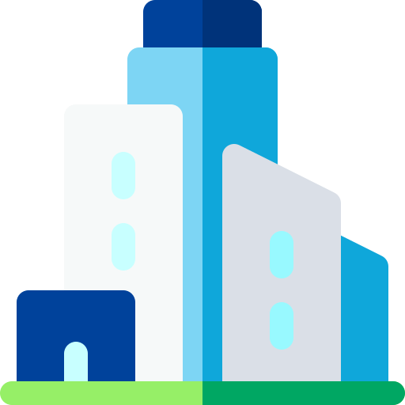
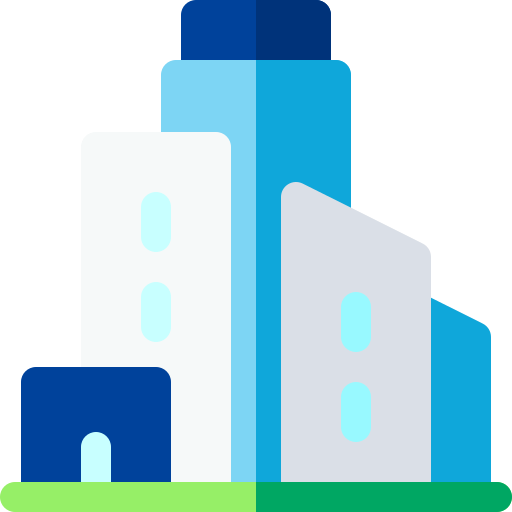

Saya Kevin
Saya pengembang web

Saya pengembang web

Asisten marketing di PT.Alyatek dan sekarang sedang belajar pengembangan web baik dari sekolah koding maupun mandiri.
Melakukan pengembangan website untuk pribadi dan organisasi. Saya mulai belajar untuk koding pada tahun 2019 karena ingin membuat website pribadi yang dapat menunjukan hasil dari perjalanan hidup saya.
Dapat berbicara bahasa Indonesia, Inggris, dan Prancis. Saat ini sedang mempelajari bahasa Spanyol dan Italia
Saya sedang mencari rekan untuk belajar pengembangan situs dan sedang mencari teman seperjuangan, tertarik? Bisa hubungi kontak di bawah ini dan mari kita membangun website bersama!
CONTACT ME